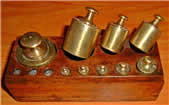
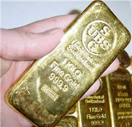

Metric Mass (Weight)

Mass: how much matter is in an object.
We measure mass by weighing, but Weight and Mass are not really the same thing.
These are the most common measurements:
- Grams
- Kilograms
- Tonnes
Grams are the smallest, Tonnes are the biggest.
Let’s take a few minutes and explore how heavy each of these are.
Grams
 |
A paperclip weighs about 1 gram. Hold one small paperclip in your hand. Does that weigh a lot? No! A gram is very light. That is why you often see things measured in hundreds of grams. |
Grams are often written as g (for short), so "300 g" means "300 grams".
A loaf of bread weighs about 700 g (for a nice sized loaf)
Kilograms
Once we have 1,000 grams, we have 1 kilogram.1 kilogram = 1,000 grams A dictionary has a mass of about one kilogram. |
 |

This gold bar also has a mass of 1 kilogram.
Kilograms are great for measuring things that can be lifted by people (sometimes very strong people are needed of course!).
 |
Kilograms are often written as kg (that is a "k" for "kilo" and a "g" for "gram), so "10 kg" means "10 kilograms". Scales measure our weight using kilograms. An adult weighs about 70 kg. How much do you weigh? |
But when it comes to things that are very heavy, we need to use the tonne.
Tonne
Once we have 1,000 kilograms, we will have 1 tonne.
1 tonne = 1,000 kilograms
 |
Tonnes (also called Metric Tons) are used to measure things that are very heavy. Things like cars, trucks and large cargo boxes are weighed using the tonne. This car weighs about 2 tonnes. |
Tonnes are often written as t (for short), so "5 t" means "5 tonnes".
Final thoughts about measuring weight:
1 kilogram = 1,000 grams
1 tonne = 1,000 kilograms
Weight or Mass?
We have used the word "weight" only because that is what people commonly say.
But we really should say "Mass". See Weight or Mass to learn more.
More Examples
A milligram is
- one-thousandth of a gram
- about the mass of a small grain of sand
- about the mass of a grain of salt
A gram is about:
- a quarter of a teaspoon of sugar
- a cubic centimeter of water
- a paperclip
- a pen cap
- a thumbtack
- a pinch of salt
- a piece of gum
- the weight of any US bill
- one fifth of a piece of paper (80 gsm A4 paper weighs 4.8 g)
- 0.035274 of an ounce to 6 decimal places (we need 28.349523 grams to make an ounce)
A kilogram is about:
- the mass of a liter bottle of water
- very close to 10% more than 2 pounds (within a quarter of a percent)
- very very close to 2.205 pounds (accurate to 3 decimal places)
- 7 apples
- a loaf and a half of bread
- about 2 packs of ground beef
A tonne is about:
- the weight of a small car